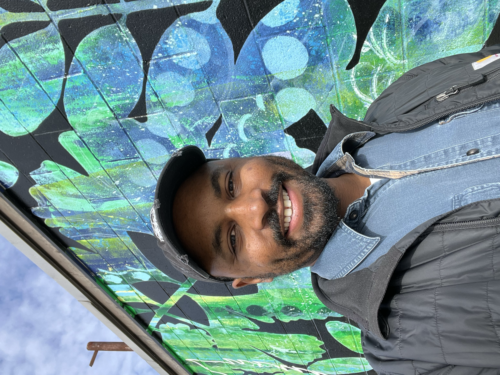

Jamal A. Williams
Computational and cognitive neuroscience of music, memory, and perception


My work focuses on the computational and neural mechanisms underlying human memory and perception. I use real-world music to investigate how the brain predicts and recalls complex auditory experiences, attempting to shed light on broader questions related to event perception and memory formation.
I earned my Ph.D. in Neuroscience from Princeton University in 2023, where I was advised by Kenneth Norman, Uri Hasson, and Elizabeth Margulis. My doctoral research examined the neural dynamics of music event segmentation and music-evoked memory reactivation using fMRI and computational modeling.
I am currently a postdoctoral fellow at MIT, being advised by Josh McDermott. My postdoctoral work explores the computational principles underlying musical expectations using state-of-the-art deep learning approaches.
In Fall 2027, I will join Northeastern University as an Assistant Professor in Music, AI and Brain Health. I will hold appointments in the Departments of Music and Psychology and serve as core faculty in the Institute for Cognitive and Brain Health.
news
- Our new paper is out in Nature Communications! 🎶🧠✨ If you're interested in how the brain represents meaning evoked by music, check it out. Shout out to my Princeton team for making this happen!🚀
- ✨New Preprint Alert✨
Our new preprint shows how default mode, motor, auditory, and visual regions track high-level musical structure during expert performance. 🧠 🎹 - Presented poster on postdoctoral work at SMPC 2026 evaluating deep learning models on human musical expectation tasks.
- What is the neural basis of music-evoked memory reactivation? And how does this reactivation relate to later memory for the retrieved events? In our new study, we used Eternal Sunshine of the Spotless Mind to find out.
- I'm excited to share that I'll be joining Northeastern University as an Assistant Professor in Music, AI and Brain Health in Fall 2027! I'm grateful to everyone who has supported me along the way and look forward to this next chapter. 🎶🧠
selected publications
- High-Order Areas and Auditory Cortex Both Represent the High-Level Event Structure of Music.
- Music-evoked reactivation during continuous perception is associated with enhanced subsequent recall of naturalistic events.
- Music evokes shared neural representations of imagined narratives across sensory modalities.
- Hierarchical neural integration of musical structure during expert performance.
- Combating reductionism in music neuroscience with ecologically-valid paradigms: What can (and cannot) be gained?